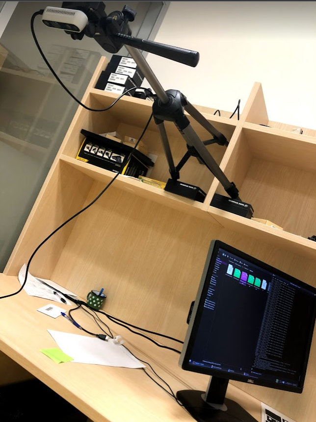
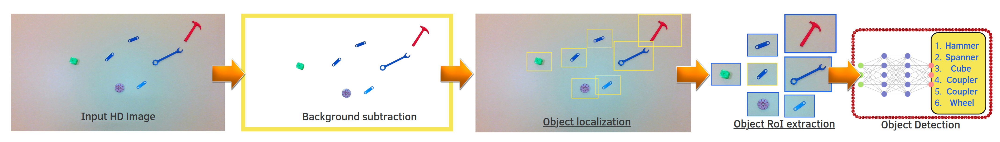

Real-time detection of minuscule parts in collaborative robotics
 fig 1. Optimised detection pipeline on Jetson-nano
fig 1. Optimised detection pipeline on Jetson-nano
Background
As a part of Collaborative Robotics operative Workspace project, my internship project was focused on improving Object detection module at slave robot ends in the assembly line workspace.The setup consists of a Master system controlling the whole assembly line and Robots. The robots are treated as slave and have a their own imaging uint as the Intel realsense camera and a processing unit as Jetson nano which is compact powerful computer that lets you run multiple neural networks in parallel for applications like image classification, object detection, segmentation, and speech processing.
Our goal was to reduce delay and the load in Master by leveraging the processing capabilities of Jetson nano in a limiting processing power scenario.
Problem statement
We wanted achieve Object detection of small machine parts(like nut, bolts) in the assembly line at the slaves in Jetson nano, which requires high resolution images to resolve small components but with the limiting processing capabilities of the slaves, object detection in HD imagescan’t be performed in real time. Hence we want to optimise out Object detection process with additional preprocessing that could make the process of object detection seamless at the slave end.Various image traditional and advanced image processing techniques were studied and compared using profiling of various functions in python to achieve the object localisation in factors in 10 milliseconds.
Method and pipeline
Raw image in HD stream is published as a ROS message by the intel realsense camera node which is. Using CV_Bridge ROS message is converted into readable cv2 arrays for further preprocessing.As soon as the program is started, we assume that the workspace is empty, the background is captured and saved. This saved empty background is used for background subtraction to segment out the newly introduced objects in the workspace. We keep a threshold value to tackle noise, shadow and lighting variations.
Once we perform background subtraction, we get the segmentation of the newly introduced parts in the robot workspace. Using edge detection techniques, various objects are localised and cropped images of these small objects are cut out which reduces the dimensionality by factors of 100.
These cropped frames are then pushed for object detection to predict their names or class labels. The master subscribes the object detection results are published by the slaves and incooperate the visual scene for planning, collision avoidance and human-collaborative tasks in real-time,
Collaborative robotics workspace
The System consists of Masters and slaves, with robots in the operating end and a realtime vision stream for feedback and planning. ROS- Robotic Operating System was used as the architecture framework for the whole project, programmed in Python.The Robots are the Slave systems that operates in the assembly line.
Each slave system consists of two modules,
- The manipulation module consists of a Robotic arm.
- The Computer vision module consists of a Jetson nano for processing and an Intel Realsense depth 435i camera for imaging in the local workspace.
Master controls the assembly system, robotic arm plannings, receives slave’s feedbacks and based on it the master takes appropriate decision in real-time.
A typical object localisation and segmentation of various parts(6-8 parts) in a HD live stream could be be achieved in less than 40 milliseconds.

fig 2. Experiment and test setup
fig 2. Experiment and test setup

fig 3. Object detection Workflow
fig 3. Object detection Workflow